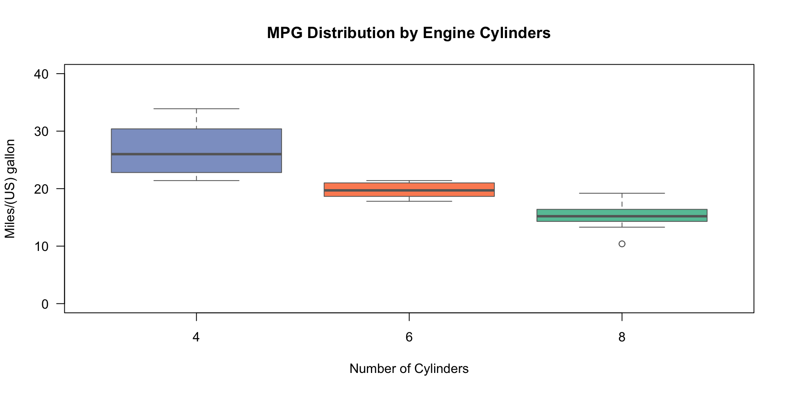

c()函数2026-05-11
c()函数的作用把多个值组合成一个向量（combine/concatenate）。
R 是向量化的世界：
标量（单一数值）在 R 中其实是长度为 1 的向量。
绝大多数函数（如 mean(), plot()）期望接收一个打包好的“向量包”，而不是散装的数字。。
c()永远只返回一维向量。
c()的典型场景在提取多个位置的元素时，漏写 c() 会改变代码的本质逻辑。

# sapply(mtcars, function(x) Mean = mean(x), Sd = sd(x)) #报错
sapply(mtcars, function(x) c(Mean = mean(x), Sd = sd(x))) mpg cyl disp hp drat wt qsec
Mean 20.090625 6.187500 230.7219 146.68750 3.5965625 3.2172500 17.848750
Sd 6.026948 1.785922 123.9387 68.56287 0.5346787 0.9784574 1.786943
vs am gear carb
Mean 0.4375000 0.4062500 3.6875000 2.8125
Sd 0.5040161 0.4989909 0.7378041 1.6152%in% 用于判断一个元素是否存在于一个向量中。
当你需要判断一个值是否属于多个可能的值时，必须使用 c() 来组合这些值成一个向量。
提取：4缸或6缸的汽车。
mpg cyl disp hp drat wt qsec vs am gear carb
Mazda RX4 21.0 6 160.0 110 3.90 2.620 16.46 0 1 4 4
Mazda RX4 Wag 21.0 6 160.0 110 3.90 2.875 17.02 0 1 4 4
Datsun 710 22.8 4 108.0 93 3.85 2.320 18.61 1 1 4 1
Hornet 4 Drive 21.4 6 258.0 110 3.08 3.215 19.44 1 0 3 1
Valiant 18.1 6 225.0 105 2.76 3.460 20.22 1 0 3 1
Merc 240D 24.4 4 146.7 62 3.69 3.190 20.00 1 0 4 2
Merc 230 22.8 4 140.8 95 3.92 3.150 22.90 1 0 4 2
Merc 280 19.2 6 167.6 123 3.92 3.440 18.30 1 0 4 4
Merc 280C 17.8 6 167.6 123 3.92 3.440 18.90 1 0 4 4
Fiat 128 32.4 4 78.7 66 4.08 2.200 19.47 1 1 4 1
Honda Civic 30.4 4 75.7 52 4.93 1.615 18.52 1 1 4 2
Toyota Corolla 33.9 4 71.1 65 4.22 1.835 19.90 1 1 4 1
Toyota Corona 21.5 4 120.1 97 3.70 2.465 20.01 1 0 3 1
Fiat X1-9 27.3 4 79.0 66 4.08 1.935 18.90 1 1 4 1
Porsche 914-2 26.0 4 120.3 91 4.43 2.140 16.70 0 1 5 2
Lotus Europa 30.4 4 95.1 113 3.77 1.513 16.90 1 1 5 2
Ferrari Dino 19.7 6 145.0 175 3.62 2.770 15.50 0 1 5 6
Volvo 142E 21.4 4 121.0 109 4.11 2.780 18.60 1 1 4 2cc()函数绘图颜色：col = c("red", "blue")
坐标范围：ylim = c(0, 100)
多行提取：mtcars[c(1:5), ]
批量安装包：install.packages(c("dplyr", "ggplot2"))
记住：在 R 里，凡是“超过一个”的东西，90% 都要用 c() 盒装起来！
2小时R入门 | © 2026 顶刊研习社, Li Zongzhang